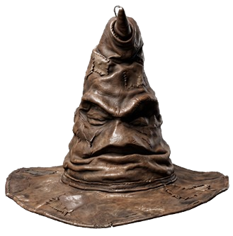

Büyük Salon'a hoş geldin genç büyücü. Şapka zihnini tartmadan önce adını bilmeli...
"Hımm... Çok derin bir karakter. Hangi köşede parlayacağını görmek kolay değil..."
Seçmen Şapka kararını mühürlüyor...